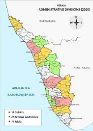
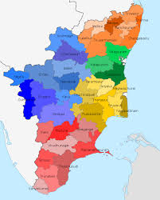

Named as one of the ten paradises of the world by National Geographic Traveler, Kerala is one
of the prominent tourist destinations of India, with coconut-lined sandy beaches,
backwaters, hill stations, Ayurvedic tourism, and tropical greenery as its major attractions.

Fig.1 - Kerala.
More about Kerala...
Read more
Kerala is well-known for its mesmerizing backwaters, ecotourism initiatives, scenic beauty,
amazing beaches, and mouthwatering cuisine.
Tamil Nadu
Tamil Nadu is a state in southern India. It covers more than 50,200 square miles (130,000 square km).
Tamil people constitute the majority of the state's population, and Tamil is the state's official
language. Nadu's capital is Chennai, which is an industrial centre, but the state is
essentially agricultural.

Fig.2 - Tamil Nadu.
More about Tamil Nadu...
Read more
The Hindu temples and monuments at Mamallapuram have become famous tourist attractions. One of
the many festivals in Tamil Nadu is the Koovagam festival, where thousands of people gather to
celebrate their transgender identities. In Tamil Nadu Bharata natyam, Karnatak music, and movies
are all widely popular.
Andhra Pradesh
Andhra Pradesh is located on the southeastern coast of India and is the eighth largest state in
the country. The state is bordered by Chhattisgarh to the north, Odisha to the northeast,
Telangana and Karnataka to the west, Tamil Nadu to the south, and the Bay of Bengal to the east.
Fig.3 - Andhra Pradesh.
More about Andhra Pradesh...
Read more
A few of the famous places here include Venkatagiri Fort, Udayagiri Fort, Sri Ranganathaswamy
Temple, Jonnawada, Mypad Beach, Penchalakona, Pulicat Lake, and Nelapattu Bird Sanctuary.
History of South India
South India's history is marked by rich cultural, economic, and political developments spanning thousands
of years.
Neolithic cultures in the region date back to 8000 BCE, with significant advancements in iron technology
around 1000 BCE.
Unlike many other regions, South India did not experience a distinct Bronze Age. It was a crucial node
in ancient trade routes, linking the Mediterranean to East Asia, evident from archaeological finds in
ports like Muziris and Arikamedu.
During the Sangam period (c. 3rd century BCE to c.
4th century CE), South India engaged in vibrant trade with the Phoenicians, Romans, Greeks,
Arabs,Syrians, Jews, and Chinese.
The rise of powerful kingdoms such as the Cholas, Pallavas, and Pandyas from the early centuries CE
shaped the region's history.
The Chola Empire, particularly under Rajaraja Chola I and Rajendra Chola I, became renowned for its
naval dominance and expansive trade networks, especially in the spice trade.
These dynasties left behind a legacy of magnificent temples and intricate art.
The region was also a significant part of the ancient Silk Road, facilitating extensive cultural
exchanges.
South India's history is a tapestry of indigenous traditions and global interactions that have left a
lasting impact on its cultural and historical landscape.
Read more
Early Developments
The history of South Indian trade dates back much earlier. Carbon dating has shown that Neolithic cultures in South India existed as early as 8000 BCE, and by 1000 BCE, iron technology had spread through the region.
Unlike other parts of the world, South India did not have a fully developed Bronze Age before transitioning to the Iron Age.
Conclusion
In conclusion, the history of South India is a testament to its profound contributions to cultural,
economic, and political spheres over millennia.
From its early Neolithic societies and advancements in iron technology to its central role in ancient
global trade networks, South India has been a vibrant hub of activity and innovation.
The rise of powerful dynasties like the Cholas, Pallavas, and Pandyas brought about significant
developments in architecture, art, and maritime prowess, particularly during the height of the spice
trade.
The region's integration into the ancient Silk Road facilitated rich cultural exchanges, blending
indigenous traditions with influences from distant civilizations.
South India's historical legacy is reflected in its enduring cultural heritage, which continues to
inspire and influence to this day.